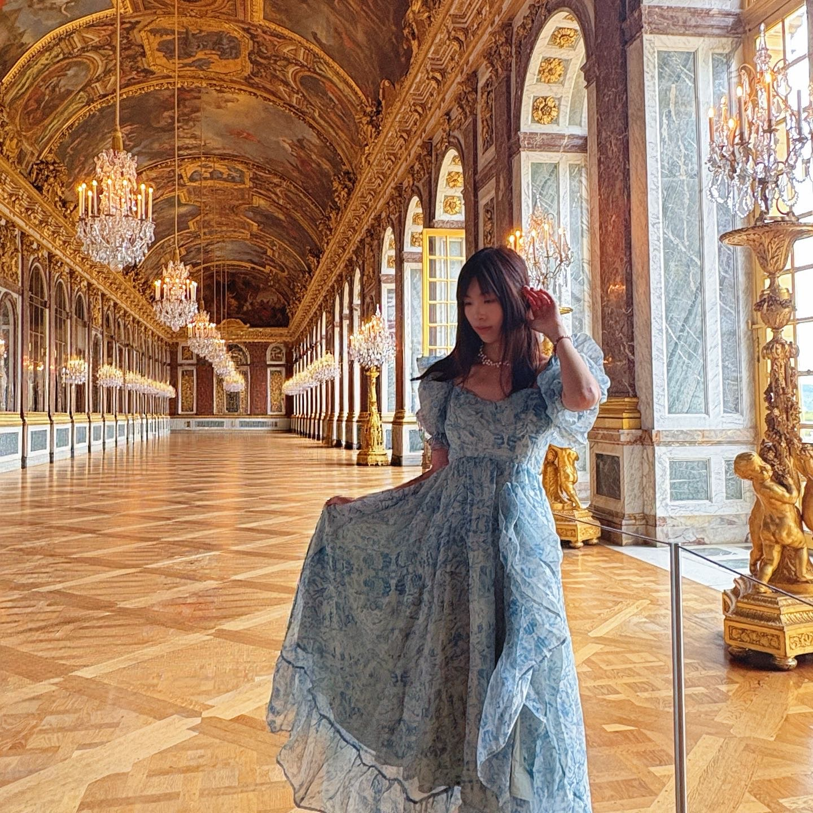

Lattice algorithms
& engineering
Designing and implementing lattice reduction and sieving algorithms, with a focus on PnJBKZ simulation and strategy optimization.
BKZ / PnJBKZ / G6K
POSTDOCTORAL RESEARCHER · UNIVERSITY OF BORDEAUX
Lattices, algorithms
& cryptography.
I study lattice algorithms and the concrete security of post-quantum cryptography, connecting algorithm design, practical cryptanalysis, and security reductions.
I am a postdoctoral researcher at the University of Bordeaux, in the Institut de Mathématiques de Bordeaux (IMB), CANARI Team, working with Alice Pellet-Mary.

01 / RESEARCH
Algorithms, implementations, and reductions for understanding the hardness of lattice problems.
Designing and implementing lattice reduction and sieving algorithms, with a focus on PnJBKZ simulation and strategy optimization.
BKZ / PnJBKZ / G6K
Modeling the cost and success probability of lattice attacks, from two-step LWE solving to approximate CVP and lattice-signature security.
LWE / CVP / SIGNATURES
Studying the foundations of structured lattice assumptions, including a unified primal/dual reduction framework from RLWE to MP-LWE.
RLWE / MP-LWE / REDUCTIONS
RESEARCH SPOTLIGHT
A practical randomized Nearest-Colattice framework combining randomized slicers, dimensions for free, and Klein sampling for multiple and batched targets.
Read the preprint2D illustration · Euclidean & infinity norms
Exploratory interests also include quantum algorithms and quantum cryptanalysis of lattice-based cryptography.
02 / PUBLICATIONS
Forthcoming · Corresponding author · Alphabetical author order
First author · Authors ordered by contribution
Preprint · First author · Authors ordered by contribution
Pages 119–152
Pages 3–35 · First author · Authors ordered by contribution
Pages 237–255 · First author · Authors ordered by contribution
In Chinese · First author · Authors ordered by contribution
Preprint · Co-first author with Leizhang Wang · Authors ordered by contribution
No matching papers. Try another title, author, or year.
8 works shown
Preprints are listed by their ePrint report year. Publication status follows the linked CV.
03 / SOFTWARE
Research code for lattice algorithms, strategy search, and concrete-security estimation.
Progressive lattice reduction with sieving, PnJBKZ simulation, and LWE-solving strategies.
RESEARCH IMPLEMENTATION GitHubExplore public implementations and tools for lattice cryptanalysis and algorithm engineering.
GITHUB / SUMMWER RepositoriesTools & methods Python · C/C++ · Cython · G6K · Gurobi · Linux · Docker
04 / ACADEMIC LIFE
At Shanghai Jiao Tong University, I organized an undergraduate lattice foundations seminar and mentored research on bounded discrete Gaussian sampling.
I also mentored an M.Eng. student on G6K-GPU-MPI, a Chinese patent application, and a survey of lattice-cryptography security analysis.
Randomized Nearest-Colattice with an Approx-CVP Oracle for Arbitrary Norm.
Technical talks on lattice algorithms, cryptanalysis, and concrete security estimation.
2025 & 2024 · Third Prize as supervisor, National University Cryptographic Mathematics Challenge (RLWE / Discrete Gaussian Sampler).
2022 · Champion, Qiangwang Cup Cryptographic Mathematics Special Competition, Public-Key Cryptography Track.
2022 & 2021 · Second Prize, National University Cryptographic Mathematics Challenge (HNP / LWE).
2020 · NSUCRYPTO First Prize in the team competition; Third Prize in the individual university division.
Co-submitter of COMPASS-SIG (second author) and COMPASS-KEM (third author), candidates in China’s post-quantum cryptographic algorithm selection.
Method for Security Evaluation of Cryptographic Schemes Based on the LWE Problem. Chinese patent application No. 202410004168.3.
05 / CONTACT
For research discussions and academic correspondence.
UNIVERSITY OF BORDEAUX
Institut de Mathématiques